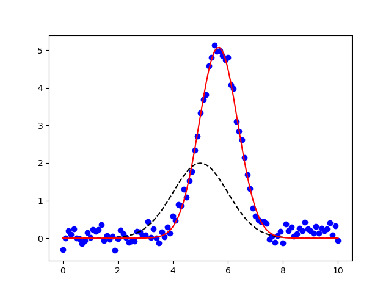

| LMFIT | Contents | Download | Develop | ||
| Non-Linear Least-Squares Minimization and Curve-Fitting for Python | Introduction | Parameters | Models |
A common use of least-squares minimization is curve fitting, where one has a parametrized model function meant to explain some phenomena and wants to adjust the numerical values for the model to most closely match some data. With scipy, such problems are commonly solved with scipy.optimize.curve_fit(), which is a wrapper around scipy.optimize.leastsq(). Since Lmit’s minimize() is also a high-level wrapper around scipy.optimize.leastsq() it can be used for curve-fitting problems, but requires more effort than using scipy.optimize.curve_fit().
Here we discuss lmfit’s Model class. This takes a model function – a function that calculates a model for some data – and provides methods to create parameters for that model and to fit data using that model function. This is closer in spirit to scipy.optimize.curve_fit(), but with the advantages of using Parameters and lmfit.
In addition to allowing you turn any model function into a curve-fitting method, Lmfit also provides canonical definitions for many known lineshapes such as Gaussian or Lorentzian peaks and Exponential decays that are widely used in many scientific domains. These are available in the models module that will be discussed in more detail in the next chapter (Built-in Fitting Models in the models module). We mention it here as you may want to consult that list before writing your own model. For now, we focus on turning python function into high-level fitting models with the Model class, and using these to fit data.
Let’s start with a simple and common example of fitting data to a Gaussian peak. As we will see, there is a buit-in GaussianModel class that provides a model function for a Gaussian profile, but here we’ll build our own. We start with a simple definition the model function:
>>> from numpy import sqrt, pi, exp, linspace
>>>
>>> def gaussian(x, amp, cen, wid):
... return amp * exp(-(x-cen)**2 /wid)
...
that we want to use to fit to some data \(y(x)\) represented by the arrays y and x. Using scipy.optimize.curve_fit() makes this easy to do, allowing us to do something like:
>>> from scipy.optimize import curve_fit
>>>
>>> x, y = read_data_from_somewhere(....)
>>>
>>> init_vals = [5, 5, 1] # for [amp, cen, wid]
>>> best_vals, covar = curve_fit(gaussian, x, y, p0=init_vals)
>>> print best_vals
That is, we read in data from somewhere, make an initial guess of the model values, and run scipy.optimize.curve_fit() with the model function, data arrays, and initial guesses. The results returned are the optimal values for the parameters and the covariance matrix. It’s simple and very useful. But it misses the benefits of lmfit.
To solve this with lmfit we would have to write an objective function. But such a function would be fairly simple (essentially, data - model, possibly with some weighting), and we would need to define and use appropriately named parameters. Though convenient, it is somewhat of a burden to keep the named parameter straight (on the other hand, with func:scipy.optimize.curve_fit you are required to remember the parameter order). After doing this a few times it appears as a recurring pattern, and we can imagine automating this process. That’s where the Model class comes in.
The Model allows us to easily wrap a model function such as the gaussian function. This automatically generate the appropriate residual function, and determines the corresponding parameter names from the function signature itself:
>>> from lmfit import Model
>>> gmod = Model(gaussian)
>>> gmod.param_names
set(['amp', 'wid', 'cen'])
>>> gmod.independent_vars)
['x']
The Model gmod knows the names of the parameters and the independent variables. By default, the first argument of the function is taken as the independent variable, held in independent_vars, and the rest of the functions positional arguments (and, in certain cases, keyword arguments – see below) are used for Parameter names. Thus, for the gaussian function above, the parameters are named amp, cen, and wid, and x is the independent variable – all taken directly from the signature of the model function. As we will see below, you can specify what the independent variable is, and you can add or alter parameters too.
On creation of the model, parameters are not created. The model knows what the parameters should be named, but not anything about the scale and range of your data. You will normally have to make these parameters and assign initiald values and other attributes. To help you do this, each model has a make_params() method that will generate parameters with the expected names:
>>> params = gmod.make_params()
This creates the Parameters but doesn’t necessarily give them initial values – again, the model has no idea what the scale should be. You can set initial values for parameters with keyword arguments to make_params(), as with:
>>> params = gmod.make_params(cen=5, amp=200, wid=1)
or assign them (and other parameter properties) after the Parameters has been created.
A Model has several methods associated with it. For example, one can use the eval() method to evaluate the model or the fit() method to fit data to this model with a Parameter object. Both of these methods can take explicit keyword arguments for the parameter values. For example, one could use eval() to calculate the predicted function:
>>> x = linspace(0, 10, 201)
>>> y = gmod.eval(x=x, amp=10, cen=6.2, wid=0.75)
Admittedly, this a slightly long-winded way to calculate a Gaussian function. But now that the model is set up, we can also use its fit() method to fit this model to data, as with:
result = gmod.fit(y, x=x, amp=5, cen=5, wid=1)
Putting everything together, the script to do such a fit (included in the examples folder with the source code) is:
#!/usr/bin/env python
#<examples/doc_model1.py>
from numpy import sqrt, pi, exp, linspace, loadtxt
from lmfit import Model
import matplotlib.pyplot as plt
data = loadtxt('model1d_gauss.dat')
x = data[:, 0]
y = data[:, 1]
def gaussian(x, amp, cen, wid):
"1-d gaussian: gaussian(x, amp, cen, wid)"
return (amp/(sqrt(2*pi)*wid)) * exp(-(x-cen)**2 /(2*wid**2))
gmod = Model(gaussian)
result = gmod.fit(y, x=x, amp=5, cen=5, wid=1)
print(result.fit_report())
plt.plot(x, y, 'bo')
plt.plot(x, result.init_fit, 'k--')
plt.plot(x, result.best_fit, 'r-')
plt.show()
#<end examples/doc_model1.py>
which is pretty compact and to the point. The returned result will be a ModelFit object. As we will see below, this has many components, including a fit_report() method, which will show:
[[Model]]
gaussian
[[Fit Statistics]]
# function evals = 33
# data points = 101
# variables = 3
chi-square = 3.409
reduced chi-square = 0.035
[[Variables]]
amp: 8.88021829 +/- 0.113594 (1.28%) (init= 5)
cen: 5.65866102 +/- 0.010304 (0.18%) (init= 5)
wid: 0.69765468 +/- 0.010304 (1.48%) (init= 1)
[[Correlations]] (unreported correlations are < 0.100)
C(amp, wid) = 0.577
The result will also have init_fit for the fit with the initial parameter values and a best_fit for the fit with the best fit parameter values. These can be used to generate the following plot:
which shows the data in blue dots, the best fit as a solid red line, and the initial fit as a dashed black line.
We emphasize here that the fit to this model function was really performed with 2 lines of code:
gmod = Model(gaussian)
result = gmod.fit(y, x=x, amp=5, cen=5, wid=1)
These lines clearly express that we want to turn the gaussian function into a fitting model, and then fit the \(y(x)\) data to this model, starting with values of 5 for amp, 5 for cen and 1 for wid, and compare well to scipy.optimize.curve_fit():
best_vals, covar = curve_fit(gaussian, x, y, p0=[5, 5, 1])
except that all the other features of lmfit are included such as that the Parameters can have bounds and constraints and the result is a richer object that can be reused to explore the fit in more detail.
The Model class provides a general way to wrap a pre-defined function as a fitting model.
Create a model based on the user-supplied function. This uses introspection to automatically converting argument names of the function to Parameter names.
| Parameters: |
|
|---|
Of course, the model function will have to return an array that will be the same size as the data being modeled. Generally this is handled by also specifying one or more independent variables.
evaluate the model function for a set of parameters and inputs.
| Parameters: |
|
|---|---|
| Returns: | ndarray for model given the parameters and other arguments. |
If params is None, the values for all parameters are expected to be provided as keyword arguments. If params is given, and a keyword argument for a parameter value is also given, the keyword argument will be used.
Note that all non-parameter arguments for the model function – including all the independent variables! – will need to be passed in using keyword arguments.
perform a fit of the model to the data array with a set of parameters.
| Parameters: |
|
|---|---|
| Returns: | ModeFitResult object. |
If params is None, the internal params will be used. If it is supplied, these will replace the internal ones. If supplied, weights must is an ndarray-like object of same size and shape as data.
Note that other arguments for the model function (including all the independent variables!) will need to be passed in using keyword arguments.
Guess starting values for model parameters.
param data: data array used to guess parameter values type func: ndarray param kws: addtional options to pass to model function. return: Parameters with guessed initial values for each parameter.
by default this is left to raise a NotImplementedError, but may be overwritten by subclasses. Generally, this method should take some values for data and use it to construct reasonable starting values for the parameters.
Create a set of parameters for model.
param kws: optional keyword/value pairs to set initial values for parameters. return: Parameters. The parameters may or may not have decent initial values for each parameter.
set hints to use when creating parameters with make_param() for the named parameter. This is especially convenient for setting initial values. The name can include the models prefix or not.
| Parameters: |
|---|
a list of instances of Model that make up a composite model. See Creating composite models. Normally, you will not need to use this, but is used by Model itself when constructing a composite model from two or more models.
The model function used to calculate the model.
list of strings for names of the independent variables.
Boolean value for whether model is a composite model.
describes what to do for missing values. The choices are
None: Do not check for null or missing values (default)
'none': Do not check for null or missing values.
- 'drop': Drop null or missing observations in data. If pandas is
installed, pandas.isnull is used, otherwise numpy.isnan is used.
- 'raise': Raise a (more helpful) exception when data contains null
or missing values.
name of the model, used only in the string representation of the model. By default this will be taken from the model function.
extra keyword arguments to pass to model function. Normally this will be determined internally and should not be changed.
Dictionary of parameter hints. See Using parameter hints.
list of strings of parameter names.
prefix used for name-mangling of parameter names. The default is ‘’. If a particular Model has arguments amplitude, center, and sigma, these would become the parameter names. Using a prefix of g1_ would convert these parameter names to g1_amplitude, g1_center, and g1_sigma. This can be essential to avoid name collision in composite models.
The Model created from the supplied function func will create a Parameters object, and names are inferred from the function arguments, and a residual function is automatically constructed.
By default, the independent variable is take as the first argument to the function. You can explicitly set this, of course, and will need to if the independent variable is not first in the list, or if there are actually more than one independent variables.
If not specified, Parameters are constructed from all positional arguments and all keyword arguments that have a default value that is numerical, except the independent variable, of course. Importantly, the Parameters can be modified after creation. In fact, you’ll have to do this because none of the parameters have valid initial values. You can place bounds and constraints on Parameters, or fix their values.
As we saw for the Gaussian example above, creating a Model from a function is fairly easy. Let’s try another:
>>> def decay(t, tau, N):
... return N*np.exp(-t/tau)
...
>>> decay_model = Model(decay)
>>> print decay_model.independent_vars
['t']
>>> for pname, par in decay_model.params.items():
... print pname, par
...
tau <Parameter 'tau', None, bounds=[None:None]>
N <Parameter 'N', None, bounds=[None:None]>
Here, t is assumed to be the independent variable because it is the first argument to the function. The other function arguments are used to create parameters for the model.
If you want tau to be the independent variable in the above example, you can say so:
>>> decay_model = Model(decay, independent_vars=['tau'])
>>> print decay_model.independent_vars
['tau']
>>> for pname, par in decay_model.params.items():
... print pname, par
...
t <Parameter 't', None, bounds=[None:None]>
N <Parameter 'N', None, bounds=[None:None]>
You can also supply multiple values for multi-dimensional functions with multiple independent variables. In fact, the meaning of independent variable here is simple, and based on how it treats arguments of the function you are modeling:
Note that independent variables are not required to be arrays, or even floating point numbers.
If the model function had keyword parameters, these would be turned into Parameters if the supplied default value was a valid number (but not None, True, or False).
>>> def decay2(t, tau, N=10, check_positive=False):
... if check_small:
... arg = abs(t)/max(1.e-9, abs(tau))
... else:
... arg = t/tau
... return N*np.exp(arg)
...
>>> mod = Model(decay2)
>>> for pname, par in mod.params.items():
... print pname, par
...
t <Parameter 't', None, bounds=[None:None]>
N <Parameter 'N', 10, bounds=[None:None]>
Here, even though N is a keyword argument to the function, it is turned into a parameter, with the default numerical value as its initial value. By default, it is permitted to be varied in the fit – the 10 is taken as an initial value, not a fixed value. On the other hand, the check_positive keyword argument, was not converted to a parameter because it has a boolean default value. In some sense, check_positive becomes like an independent variable to the model. However, because it has a default value it is not required to be given for each model evaluation or fit, as independent variables are.
As we will see in the next chapter when combining models, it is sometimes necessary to decorate the parameter names in the model, but still have them be correctly used in the underlying model function. This would be necessary, for example, if two parameters in a composite model (see Creating composite models or examples in the next chapter) would have the same name. To avoid this, we can add a prefix to the Model which will automatically do this mapping for us.
>>> def myfunc(x, amplitude=1, center=0, sigma=1):
...
>>> mod = Model(myfunc, prefix='f1_')
>>> for pname, par in mod.params.items():
... print pname, par
...
f1_amplitude <Parameter 'f1_amplitude', None, bounds=[None:None]>
f1_center <Parameter 'f1_center', None, bounds=[None:None]>
f1_sigma <Parameter 'f1_sigma', None, bounds=[None:None]>
You would refer to these parameters as f1_amplitude and so forth, and the model will know to map these to the amplitude argument of myfunc.
As mentioned above, the parameters created by Model.make_params() are generally created with invalid initial values of None. These values must be initialized in order for the model to be evaluated or used in a fit. There are four different ways to do this initialization that can be used in any combination:
- You can supply initial values in the definition of the model function.
- You can initialize the parameters when creating parameters with make_params().
- You can give parameter hints with set_param_hint().
- You can supply initial values for the parameters when you use the eval() or fit() methods.
Of course these methods can be mixed, allowing you to overwrite initial values at any point in the process of defining and using the model.
To supply initial values for parameters in the definition of the model function, you can simply supply a default value:
>>> def myfunc(x, a=1, b=0):
>>> ...
instead of using:
>>> def myfunc(x, a, b):
>>> ...
This has the advantage of working at the function level – all parameters with keywords can be treated as options. It also means that some default initial value will always be available for the parameter.
When creating parameters with make_params() you can specify initial values. To do this, use keyword arguments for the parameter names and initial values:
>>> mod = Model(myfunc)
>>> pars = mod.make_params(a=3, b=0.5)
After a model has been created, but prior to creating parameters with make_params(), you can set parameter hints. These allows you to set not only a default initial value but also to set other parameter attributes controlling bounds, whether it is varied in the fit, or a constraint expression. To set a parameter hint, you can use set_param_hint(), as with:
>>> mod = Model(myfunc)
>>> mod.set_param_hint('a', value = 1.0)
>>> mod.set_param_hint('b', value = 0.3, min=0, max=1.0)
>>> pars = mod.make_params()
Parameter hints are discussed in more detail in section Using parameter hints.
Finally, you can explicitly supply initial values when using a model. That is, as with make_params(), you can include values as keyword arguments to either the eval() or fit() methods:
>>> y1 = mod.eval(x=x, a=7.0, b=-2.0)
>>> out = mod.fit(x=x, pars, a=3.0, b=-0.0)
These approachess to initialization provide many opportunities for setting initial values for parameters. The methods can be combined, so that you can set parameter hints but then change the initial value explicitly with fit().
After a model has been created, you can give it hints for how to create parameters with make_params(). This allows you to set not only a default initial value but also to set other parameter attributes controlling bounds, whether it is varied in the fit, or a constraint expression. To set a parameter hint, you can use set_param_hint(), as with:
>>> mod = Model(myfunc)
>>> mod.set_param_hint('a', value = 1.0)
>>> mod.set_param_hint('b', value = 0.3, min=0, max=1.0)
Parameter hints are stored in a model’s param_hints attribute, which is simply a nested dictionary:
>>> print mod.param_hints
{'a': {'value': 1}, 'b': {'max': 1.0, 'value': 0.3, 'min': 0}}
You can change this dictionary directly, or with the set_param_hint() method. Either way, these parameter hints are used by make_params() when making parameters.
An important feature of parameter hints is that you can force the creation of new parameters with parameter hints. This can be useful to make derived parameters with constraint expressions. For example to get the full-width at half maximum of a Gaussian model, one could use a parameter hint of:
>>> mod = Model(gaussian)
>>> mod.set_param_hint('fwhm', expr='2.3548*sigma')
A ModelFit is the object returned by Model.fit(). It is a sublcass of Minimizer, and so contains many of the fit results. Of course, it knows the Model and the set of Parameters used in the fit, and it has methods to evaluate the model, to fit the data (or re-fit the data with changes to the parameters, or fit with different or modified data) and to print out a report for that fit.
While a Model encapsulates your model function, it is fairly abstract and does not contain the parameters or data used in a particular fit. A ModelFit does contain parameters and data as well as methods to alter and re-do fits. Thus the Model is the idealized model while the ModelFit is the messier, more complex (but perhaps more useful) object that represents a fit with a set of parameters to data with a model.
A ModelFit has several attributes holding values for fit results, and several methods for working with fits.
These methods are all inherited from Minimize or from Model.
evaluate the model using the best-fit parameters and supplied independent variables. The **kwargs arguments can be used to update parameter values and/or independent variables.
fit (or re-fit), optionally changing data, params, weights, or method, or changing the independent variable(s) with the **kwargs argument. See Model.fit() for argument descriptions, and note that any value of None defaults to the last used value.
return a printable fit report for the fit with fit statistics, best-fit values with uncertainties and correlations. As with fit_report().
| Parameters: |
|
|---|
ndarray result of model function, evaluated at provided independent variables and with best-fit parameters.
dictionary with parameter names as keys, and best-fit values as values.
floating point best-fit chi-square statistic.
ndarray (square) covariance matrix returned from fit.
ndarray of data to compare to model.
boolean for whether error bars were estimated by fit.
integer returned code from scipy.optimize.leastsq().
ndarray result of model function, evaluated at provided independent variables and with initial parameters.
initial parameters.
dictionary with parameter names as keys, and initial values as values.
optional callable function, to be called at each fit iteration. This must take take arguments of params, iter, resid, *args, **kws, where params will have the current parameter values, iter the iteration, resid the current residual array, and *args and **kws as passed to the objective function.
optional callable function, to be called to calculate jacobian array.
string message returned from scipy.optimize.leastsq().
string message returned from minimize().
string naming fitting method for minimize().
integer number of data points.
integer number of function evaluations used for fit.
integer number of free paramaeters in fit.
integer number of independent, freely varying variables in fit.
Parameters used in fit. Will have best-fit values.
floating point reduced chi-square statistic
ndarray for residual.
boolean flag for whether to automatically scale covariance matrix.
boolean value of whether fit succeeded.
ndarray (or None) of weighting values used in fit.
One of the most interesting features of the Model class is that models can be added together to give a composite model, with parameters from the component models all being available to influence the total sum of the separat component models. This will become even more useful in the next chapter, when pre-built subclasses of Model are discussed.
For now, we’ll consider a simple example will build a model of a Gaussian plus a line. Obviously, we could build a model that included both components:
def gaussian_plus_line(x, amp, cen, wid, slope, intercept):
"line + 1-d gaussian"
gauss = (amp/(sqrt(2*pi)*wid)) * exp(-(x-cen)**2 /(2*wid**2))
line = slope * x + intercept
return gauss + line
and use that with:
mod = Model(gaussian_plus_line)
but, of course, we already had a function for a gaussian function, and maybe we’ll discover that a linear background isn’t sufficient and we’d have to alter the model again. As an alternative we could just define a linear function:
def line(x, slope, intercept):
"a line"
return slope * x + intercept
and build a composite model with:
mod = Model(gaussian) + Model(line)
This model has parameters for both component models, and can be used as:
#!/usr/bin/env python
#<examples/model_doc2.py>
from numpy import sqrt, pi, exp, linspace, loadtxt
from lmfit import Model
import matplotlib.pyplot as plt
data = loadtxt('model1d_gauss.dat')
x = data[:, 0]
y = data[:, 1] + 0.25*x - 1.0
def gaussian(x, amp, cen, wid):
"1-d gaussian: gaussian(x, amp, cen, wid)"
return (amp/(sqrt(2*pi)*wid)) * exp(-(x-cen)**2 /(2*wid**2))
def line(x, slope, intercept):
"line"
return slope * x + intercept
mod = Model(gaussian) + Model(line)
pars = mod.make_params( amp=5, cen=5, wid=1, slope=0, intercept=1)
print mod
for k, v in pars.items():
print k, v
result = mod.fit(y, pars, x=x)
print(result.fit_report())
plt.plot(x, y, 'bo')
plt.plot(x, result.init_fit, 'k--')
plt.plot(x, result.best_fit, 'r-')
plt.show()
#<end examples/model_doc2.py>
which prints out the results:
[[Model]]
Composite Model:
gaussian
line
[[Fit Statistics]]
# function evals = 44
# data points = 101
# variables = 5
chi-square = 2.579
reduced chi-square = 0.027
[[Variables]]
amp: 8.45931061 +/- 0.124145 (1.47%) (init= 5)
cen: 5.65547872 +/- 0.009176 (0.16%) (init= 5)
intercept: -0.96860201 +/- 0.033522 (3.46%) (init= 1)
slope: 0.26484403 +/- 0.005748 (2.17%) (init= 0)
wid: 0.67545523 +/- 0.009916 (1.47%) (init= 1)
[[Correlations]] (unreported correlations are < 0.100)
C(amp, wid) = 0.666
C(cen, intercept) = 0.129
and shows the plot on the left.
On the left, data is shown in blue dots, the total fit is shown in solid red line, and the initial fit is shown as a black dashed line. In the figure on the right, the data is again shown in blue dots, and the Gaussian component shown as a black dashed line, and the linear component shown as a red dashed line. These components were generated after the fit using the Models eval() method:
comp_gauss = mod.components[0].eval(x=x)
comp_line = mod.components[1].eval(x=x)
Note that we have to pass in x here, but not any of the final values for the parameters – the current values for mod.params will be used, and these will be the best-fit values after a fit. While the model does store the best parameters and the estimate of the data in mod.best_fit, it does not actually store the data it fit to or the independent variables – here, x for that data. That means you can easily apply this model to other data sets, or evaluate the model at other values of x. You may want to do this to give a finer or coarser spacing of data point, or to extrapolate the model outside the fitting range. This can be done with:
xwide = np.linspace(-5, 25, 3001)
predicted = mod.eval(x=xwide)
A final note: In this example, the argument names for the model functions do not overlap. If they had, the prefix argument to Model would have allowed us to identify which parameter went with which component model. As we will see in the next chapter, using composite models with the built-in models provides a simple way to build up complex models.
By default a Model object has a name attribute containing the name of the model function. This name can be overridden when building a model:
my_model = Model(gaussian, name='my_gaussian')
or by assigning the name attribute:
my_model = Model(gaussian)
my_model.name = 'my_gaussian'
This name is used in the object representation (for example when printing):
<lmfit.Model: my_gaussian>
A composite model will have the name ‘composite_fun’ by default, but as noted, we can overwrite it with a more meaningful string. This can be useful when dealing with multiple models.
For example, let assume we want to fit some bi-modal data. We initially try two Gaussian peaks:
model = GaussianModel(prefix='p1_') + GaussianModel(prefix='p2_')
model.name = '2-Gaussians model'
Here, instead of the standard name ‘composite_func’, we assigned a more meaningful name. Now, if we want to also fit with two Lorentzian peaks we can do similarly:
model2 = LorentzianModel(prefix='p1_') + LorentzianModel(prefix='p2_')
model2.name = '2-Lorentzians model'
It is evident that assigning names will help to easily distinguish the different models.
{kind=link}
{kind=link}
{kind=link}